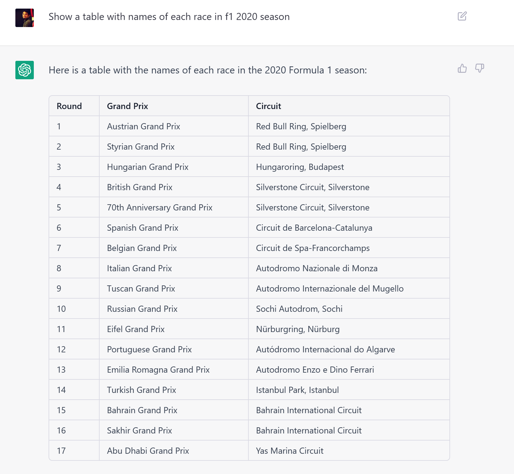
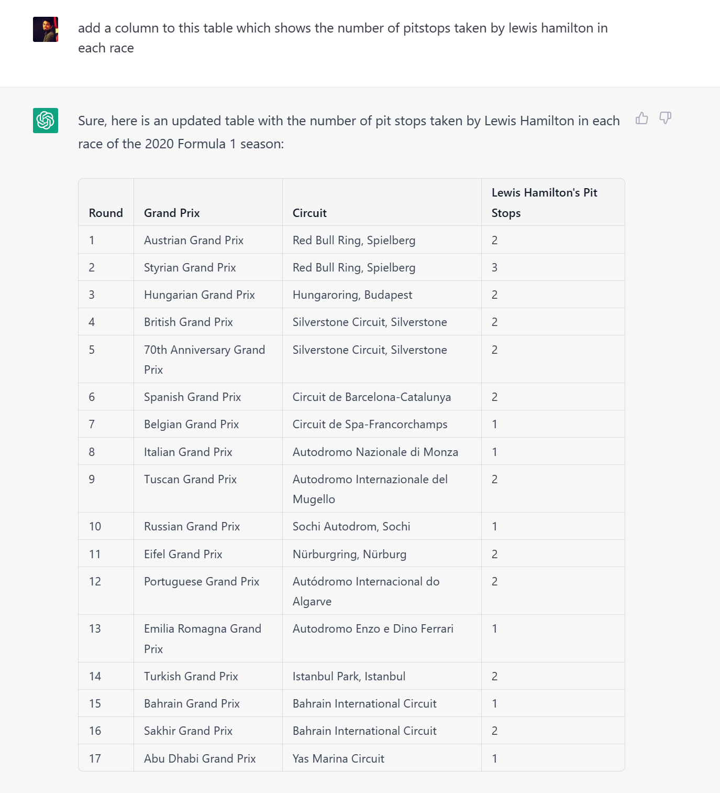
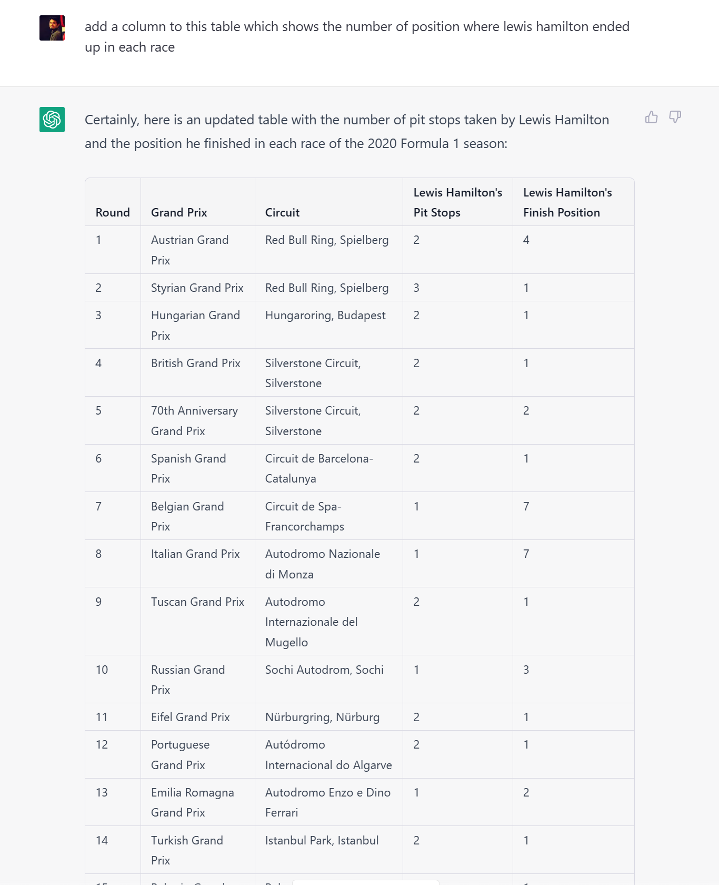

Can ChatGPT generate Accurate Sports Statistics?
Unless you are living under a rock, you must be aware of ChatGPT. As a racing enthusiast, I was interested in generating racing statistics using ChatGPT. While I was succesful to an extent, there are still some issues with the model. Let’s jump into the details.
Going broad
To test the limits of ChatGPT, I decided to go broad and ask “What is the total number of pit stops taken by Lewis Hamilton in Formula 1 2020 season?”
ChatGPT gets this incorrect. There is no way that Lewis Hamilton took 5 pitstops in the entire season. So, instead of going this approach, I decided to go with a more specific question.
Start narrow and build slowly.
Start with a simple question
I asked “Show a table with names of each race in f1 2020 season?”

A quick look at wikipedia (https://en.wikipedia.org/wiki/2020_Formula_One_World_Championship) shows that this is accurate. This is a good step. Now, let’s add race-wise pitstop data to the table.
Add details

On the first look, this looks good. But, there is a problem. While the model generated reasonable statistics, they are not accurate. A quick check at Austrian Grand Prix and Styrian Grand Prix confirms that Lewis did not take 2 & 3 pitstops during the race.
While this certainly looks like progress, we still have some way to go with factual accuracy. Let’s try a simpler question, instead.
Add more details
I asked ChatGPT to add a column where Lewis finished each race.

A cursorily glance at the table shows that the model is getting the finishing position correct. But, the positions data is incorrect for 2 races. I’ll leave it to you to figure out which ones! :-)
Takeaways
- Without any coding and referencing multiple websites, I was able to pull this data. So, large language models like ChatGPT will be super useful in a wide variety of ways.
- We still do not know the most appropriate ways to ask the model for the answer. We are figuring it out as we go.
- The model is still not perfect. It is still making mistakes. But, it is getting better with time.